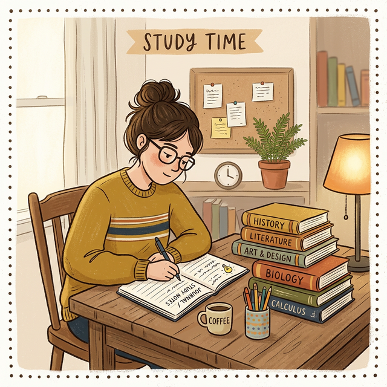

10 Study Tips Every Student Should Know
By Rahul Sharma | Published: January 15, 2025 | Updated: March 10, 2025 | 📖 8 min read | 💬 23 Comments

📋 Table of Contents
Studying effectively is a skill that every student needs to master, yet very few schools actually teach it. Most students rely on passive methods like re-reading textbooks and highlighting notes, which research has shown to be among the least effective study techniques. The good news is that with the right strategies, you can dramatically improve your learning efficiency and academic performance.
In this article, we'll explore 10 science-backed study tips that have been proven to help students learn faster, remember more, and perform better in exams. Whether you're in high school, college, or preparing for competitive exams, these tips will transform the way you study.
1. Create a Study Schedule
One of the most important study habits you can develop is creating a consistent study schedule. Without a plan, it's easy to procrastinate or spend too much time on one subject while neglecting others. A well-structured study schedule helps you allocate time effectively, ensures balanced coverage of all subjects, and reduces last-minute cramming.
Start by listing all the subjects and topics you need to cover. Then estimate how much time each topic requires based on its difficulty and your familiarity with it. Block out specific time slots in your day for studying, and try to study the most challenging subjects when your energy levels are highest — typically in the morning for most people.
- Use a planner or digital calendar to block study time
- Allocate more time for difficult subjects
- Include buffer time for review and unexpected tasks
- Stick to the schedule for at least 21 days to build a habit
2. Use Active Recall
Active recall is the practice of actively trying to remember information without looking at your notes. Instead of passively re-reading your textbook, close the book and try to recall the key points from memory. This forces your brain to work harder, which strengthens the neural pathways associated with that information.
Research published in the journal Science found that students who practiced active recall retained 50% more information than those who used passive review methods. You can practice active recall by using flashcards, taking practice tests, or simply closing your notes and writing down everything you remember about a topic.
"The act of retrieving information from memory actually strengthens that memory, making it easier to recall in the future." — Dr. Henry Roediger, Memory Researcher
3. Practice Spaced Repetition
Spaced repetition is the technique of reviewing material at gradually increasing intervals. Instead of cramming everything in one long session, you review the material after one day, then after three days, then after a week, and so on. This technique takes advantage of the spacing effect, a well-documented phenomenon in cognitive psychology.
Apps like Anki, Quizlet, and Brainscape use spaced repetition algorithms to schedule reviews at the optimal time. When combined with active recall, spaced repetition is one of the most powerful learning strategies available to students.
4. Take Effective Notes
Not all note-taking is equally effective. Simply copying down everything the teacher says is a passive activity that doesn't engage your brain deeply. Instead, try methods like the Cornell Note-Taking System, mind mapping, or the outline method. The key is to process and summarize information in your own words as you take notes.
- Cornell Method: Divide your page into three sections — notes, cues, and summary
- Mind Mapping: Create visual diagrams connecting related concepts
- Outline Method: Organize information hierarchically with main topics and subtopics
- Charting Method: Use columns and rows for comparing information
5. Eliminate Distractions
In today's digital world, distractions are everywhere. Social media notifications, text messages, and the temptation to check your phone can seriously disrupt your study sessions. Research shows that it takes an average of 23 minutes to fully regain your focus after being distracted. That means even a quick glance at your phone can cost you nearly half an hour of productive study time.
Create a distraction-free study environment by putting your phone on silent or airplane mode, using website blockers like Cold Turkey or Forest, studying in a quiet room, and telling your family or roommates that you're studying. The fewer distractions you have, the more efficient your study sessions will be.
6. Teach What You Learn
The Feynman Technique, named after Nobel Prize-winning physicist Richard Feynman, involves explaining a concept in simple terms as if you were teaching it to someone else. If you can explain a topic clearly and simply, you truly understand it. If you stumble or get confused, you know exactly where your gaps in understanding are.
Try teaching concepts to a friend, family member, or even to yourself in front of a mirror. You can also record yourself explaining a topic and play it back to check for clarity. This technique is especially effective for complex subjects like physics, mathematics, and programming.
7. Take Regular Breaks
Your brain can only maintain peak focus for about 25-50 minutes at a time. After that, your concentration and retention start to decline. The Pomodoro Technique addresses this by breaking study sessions into 25-minute focused blocks followed by 5-minute breaks, with a longer break after every four sessions.
During your breaks, step away from your desk, stretch, get some fresh air, or grab a healthy snack. Avoid checking social media during breaks, as this can make it harder to return to focused studying.
8. Use Visual Aids
Visual learning aids like diagrams, charts, flowcharts, and infographics can make complex information easier to understand and remember. Our brains process visual information 60,000 times faster than text, which is why visual aids are so powerful for learning.
9. Stay Physically Active
Regular exercise has been shown to improve memory, concentration, and cognitive function. Even a 20-minute walk or light exercise session can boost blood flow to the brain and improve your ability to learn and retain information. Studies have shown that students who exercise regularly perform better academically than sedentary students.
10. Get Enough Sleep
Sleep is essential for memory consolidation. During sleep, your brain processes and organizes the information you learned during the day, transferring it from short-term to long-term memory. Pulling an all-nighter before an exam is counterproductive because it deprives your brain of the sleep it needs to consolidate your studying.
Aim for 7-9 hours of sleep each night, maintain a consistent sleep schedule, and avoid screens for at least 30 minutes before bedtime. Quality sleep is one of the best things you can do for your academic performance.
"Sleep is the greatest legal performance-enhancing drug that most people are probably neglecting." — Dr. Matthew Walker, Professor of Neuroscience
📌 Key Takeaways
- Use active recall and spaced repetition for maximum retention
- Create a consistent study schedule and stick to it
- Eliminate distractions during study sessions
- Take effective notes using structured methods
- Prioritize sleep and exercise for better brain function